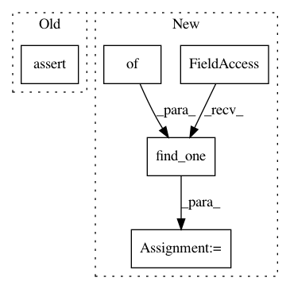

f01c9e7cf59f6e7c3fb8b97258b2003e1435c37e,tests/test_observers/test_mongo_observer.py,,test_mongo_observer_artifact_event_content_type_added,#Any#Any#,393
Before Change
mongo_obs.artifact_event(name, filename)
assert mongo_obs.fs.put.called
assert mongo_obs.fs.put.call_args[1]["content_type"] == "text/x-python"
db_run = mongo_obs.runs.find_one()
assert db_run["artifacts"]
After Change
mongo_obs.artifact_event(name, filename)
file = mongo_obs.fs.find_one({})
assert file.content_type == "text/x-python"
db_run = mongo_obs.runs.find_one()
assert db_run["artifacts"]
In pattern: SUPERPATTERN
Frequency: 3
Non-data size: 5
Instances
Project Name: IDSIA/sacred
Commit Name: f01c9e7cf59f6e7c3fb8b97258b2003e1435c37e
Time: 2019-11-12
Author: ruedigerbusche@web.de
File Name: tests/test_observers/test_mongo_observer.py
Class Name:
Method Name: test_mongo_observer_artifact_event_content_type_added
Project Name: IDSIA/sacred
Commit Name: f01c9e7cf59f6e7c3fb8b97258b2003e1435c37e
Time: 2019-11-12
Author: ruedigerbusche@web.de
File Name: tests/test_observers/test_mongo_observer.py
Class Name:
Method Name: test_mongo_observer_artifact_event_content_type_not_overwritten
Project Name: IDSIA/sacred
Commit Name: f01c9e7cf59f6e7c3fb8b97258b2003e1435c37e
Time: 2019-11-12
Author: ruedigerbusche@web.de
File Name: tests/test_observers/test_mongo_observer.py
Class Name:
Method Name: test_mongo_observer_artifact_event_metadata